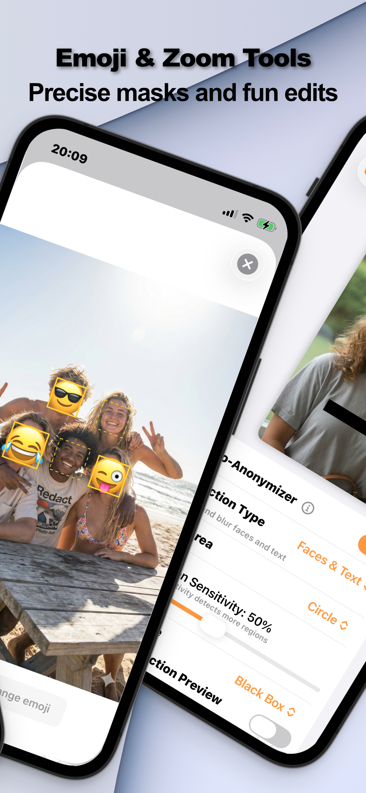

More parents are choosing to share family moments without publishing their kids' faces — a reasonable response to how long the internet remembers, how good face recognition has become, and how little control anyone has over where a public photo travels. The trick is doing it without making every post look like evidence.
Why Parents Are Masking Kids' Faces
A public photo of a child is permanent, searchable, and outside your control the moment it's posted — friends reshare, platforms index, strangers save. Masking the face keeps the moment shareable while leaving nothing for face recognition to match or strangers to recognize. It's not paranoia; it's the same logic as not posting your home address, applied to the one identifier your child can't change.
Mask a Child's Face (Step by Step)
- Open the photo in Redact PhotoEverything happens on your iPhone — a photo of your child is never uploaded to anyone's server, including ours.
- Auto-detect facesThe Auto-Anonymizer finds every face. If other adults in the shot are fine with being visible, mask only your child's face using manual selection instead.
- Pick a mask that keeps the photo warmA circular soft blur looks natural. An emoji — a heart, a star, their favorite animal — keeps birthday photos feeling like birthday photos rather than case files.
- Export and post the masked copySave the redacted version for posting. Your original stays untouched in your library for the family album.

The Emoji Compromise
The most common parent objection to blurring is aesthetic — blur reads clinical. The emoji mask is why this workflow actually sticks: the photo stays playful, grandparents still get the moment, and the face still isn't public. Circular masking (instead of a rectangle) helps for the same reason.
Don't Forget What You Can't See
The photo's metadata can carry GPS coordinates — of the playground, the school, your home. Strip EXIF and location in the same export; the full two-layer routine is in sharing photos anonymously.
Try it on your own photos
Redact Photo is free to download with a fully unlocked 3-day free trial — mask your first photo in the next two minutes, without it leaving your phone.
Get Redact Photo on the App Store